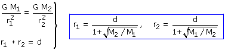
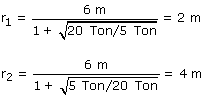

El campo se anulará en un punto A, situado en la línea que une las masas y entre ambas. La posición del punto se determina utilizando la igualdad de módulos
|
|
 |


Observa que en el punto donde se anula el campo, hay la misma proporción entre masa y cuadrado de distancia 4:1